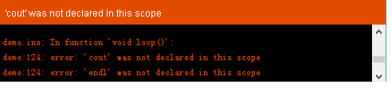
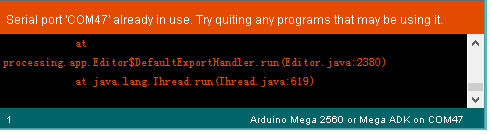
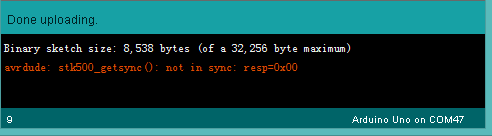

For a beginner, sometime we will meet some compilation or upload errors. Here we summarize some common errors and solutions, hope this can help.
Q1：

Maybe you hadn’t put the right Library to libraries, if you can sure have the Library, then try closing Arduino IDE, and reopen it.
Q2：

Maybe you had forgotten to plug your Arduino, try re-plugging the USB cable.
Q3：

Maybe you had chosen the wrong board, try choosing the right board, or re-plug you USB cable. If your board is Seeeduino, check if M_RST_AUTO switch to AUTO.
Finally, whenever you meet some unknown problem, try re-plug your USB cable, this will solve almost half of your problem!